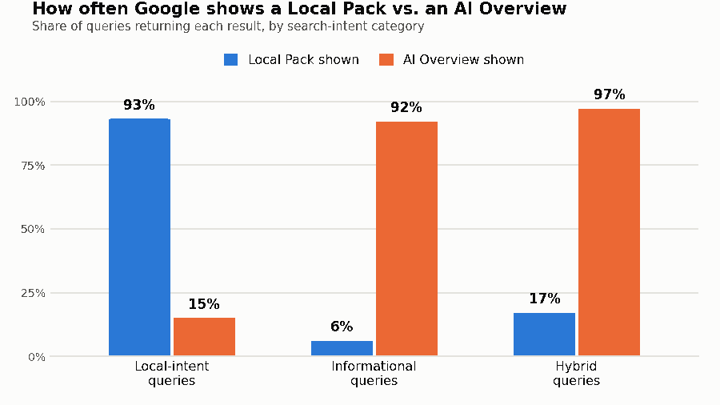

Search "plumber near me" and you'll often see a Local Pack with nearby businesses. Search "how do I fix a leaking pipe" and you may instead see an AI-generated answer before the traditional organic links.
Search results vary by query, user, location, device, and Google's current systems — but that pattern shows up often enough to matter. It's the distinction that often gets lost in broad headlines about AI and search.
What actually happened
Google has been rolling AI Overviews — its AI-generated answer boxes — into search results since 2024. By early 2026, research from SparkToro (using Similarweb's search panel data for the current figure) found that 68% of Google searches now end without anyone clicking a website at all, up from about 60% two years earlier and roughly 45% a decade ago. SparkToro is explicit that this isn't one continuous dataset: the older figures come from different clickstream providers — Jumpshot for 2016 and 2019, Datos for 2024, Similarweb for 2026 — not the same panel measured consistently over time. Treat the long-term trend as directional rather than a precise year-over-year comparison. SparkToro argues that AI Overviews are likely a major driver of the recent increase, while noting that its zero-click measure cannot isolate AI Overviews from other SERP features and changes in user behavior.
The clearest evidence comes from Ahrefs. Their original analysis, published in 2025, sampled 300,000 keywords — 150,000 with an AI Overview present and 150,000 comparable informational keywords without one — and found position-one results averaged about 34.5% fewer clicks on the AI-Overview queries. Ahrefs re-ran the same analysis in February 2026, using the same methodology on a fresh 300,000-keyword sample comparing December 2023 to December 2025, and found the gap had grown to 58%. That's a correlation between AI Overview presence and lower average click-through rate, measured specifically within Ahrefs' desktop, informational-keyword sample — an association observed twice using a consistent method, not a controlled test isolating AI Overviews as the sole cause. It's a consistent, strong signal, and it grew rather than shrank between the two studies.
If you run a business and depend on Google for customers, that's a genuinely alarming set of numbers. But before you conclude AI Overviews are coming for your business specifically, there's a distinction worth understanding — because it changes the entire picture.
Why search intent changes the picture
Not every search is the same kind of search, and AI Overviews don't touch every kind equally.
Whitespark, a company that specializes in local search, studied three US cities and six local-service industries — plumbers, dentists, personal injury lawyers, optometrists, medical clinics, and real estate agents — to see exactly where AI Overviews were showing up. The pattern was stark:
- On local-intent searches — the "near me" kind, often associated with finding a nearby business — a Local Pack (the map with business listings) still appeared 93% of the time. AI Overviews showed up in only 15% of these searches.
- On informational searches — the "how do I" and "what is" kind — AI Overviews appeared in 92% of the informational queries in Whitespark's sample.
- On hybrid searches, which mix a real need with a question, AI Overviews appeared 97% of the time.

Source: Whitespark, 540-query local-search study (2025) — 3 US cities, 6 local industries. Not a universal average.Across the full set of local-business-type queries Whitespark tested — combining all three intent types — AI Overviews appeared 68% of the time. That's a real number, but it describes their specific 540-query sample across three cities, not "68% of all local searches everywhere." The intent breakdown is the part worth remembering, because it's the part that actually tells you what to expect.
Why this matters for your business
The practical question isn't "are AI Overviews bad for search." It's "what kind of searches actually bring me customers?"
In Whitespark's sample, local-intent searches — the "near me" kind, aimed at finding a nearby business — continued to show a Local Pack far more often than an AI Overview. For many local businesses, those kinds of searches likely overlap with commercially important customer journeys: "electrician near me," "dentist accepting new patients," "best tacos in [your neighborhood]." That's Lonko's interpretation, though — Whitespark's study measured which SERP feature appeared, not which searches actually produced a call, a visit, or a sale.
Where you're more exposed is anywhere your marketing or content has leaned on informational searches — blog posts answering "how to" questions, guides, explainers — hoping that traffic eventually turns into customers. That's exactly the kind of search AI Overviews have taken over in Whitespark's sample, and it's the kind of query where Ahrefs separately found the largest click-through declines.
What not to overreact to
Don't abandon your Google Business Profile, your reviews, or your local SEO because of AI Overviews headlines. Whitespark's data doesn't support that: in their sample, local-intent searches still showed a Local Pack 93% of the time. That's evidence from one 540-query study, not a guarantee for your specific city or industry — but it's a reason not to panic, not a reason to overreact.
Don't assume your rankings dropped because something is broken, either. If your position hasn't moved but your clicks have on a query where you'd expect an informational-style result, an AI Overview appearing on that query is worth checking before you assume a penalty or a technical issue — Search Console can show you whether impressions held steady while clicks fell on the same terms.
What to actually monitor
Look at your Google Search Console data split by query, not just in aggregate. A drop in clicks alongside flat or rising impressions on your informational queries is a pattern that lines up with what Ahrefs and Whitespark describe — a diagnostic clue worth investigating, not proof on its own, since this view of Search Console doesn't tell you whether an AI Overview specifically appeared on that query. Google's newer Generative AI performance report in Search Console is a more direct source once you have access: it shows impressions in AI Overviews and AI Mode by page, device, country, and date — though it doesn't break results down by individual query yet, so query-level investigation still means checking the live search result yourself. It's also worth confirming your site hasn't been excluded from Search's generative AI features in Search Console's settings — an easy thing to overlook. A drop specifically on your "near me" and location-based queries is a different, more direct problem worth investigating separately.
It's also worth tracking phone calls, form submissions, and store visits alongside clicks. If informational content stops sending traffic but your local-intent numbers and actual leads hold steady, the AI Overview shift may be costing you less than the headlines suggest.
What's still uncertain
Whitespark's study covered three cities and six industries — a real, useful sample, but not a guarantee your city or industry behaves identically. Ahrefs' click-loss numbers are desktop-only and focused on informational keywords specifically, not a blanket figure across every kind of search, and they describe a correlation observed across two studies using a consistent methodology, rather than a controlled experiment — a real and consistent signal, but not proof that AI Overviews are the only factor at work. And Google continues to change how and where AI Overviews appear, sometimes month to month. Numbers this current are worth revisiting again before the end of the year, not treated as settled forever.
The bottom line
AI Overviews really have changed search — just not the way most headlines describe it. Whitespark found AI Overviews appearing far more often on informational and hybrid queries than on local-intent ones in their sample, while Ahrefs separately found AI Overview presence correlated with substantially lower position-one click-through rates in its informational-keyword sample. Put together, the two studies point the same direction from different angles: the searches most exposed to AI Overviews, and to the click-through losses that come with them, tend to be informational rather than local-intent — at least in what's been measured so far.
Knowing which kind of search your marketing actually depends on is the difference between panicking over a scary statistic and making one sensible decision about where to spend your attention next.
That's the same principle behind everything we build at Lonko: not more dashboards, just a clear answer to "does this actually affect me, and what should I do about it."
Sources & Further Reading
- Ahrefs — AI Overviews Reduce Clicks by 34.5%
- Ahrefs — AI Overviews Reduce Clicks, February 2026 update
- Whitespark — The Prevalence of AI Overviews in Local Search
- SparkToro — In 2026, Less Than One Third of Google Searches Still Send a Click
- Search Engine Journal — Study: Google AI Overviews Appear In 47% of Search Results